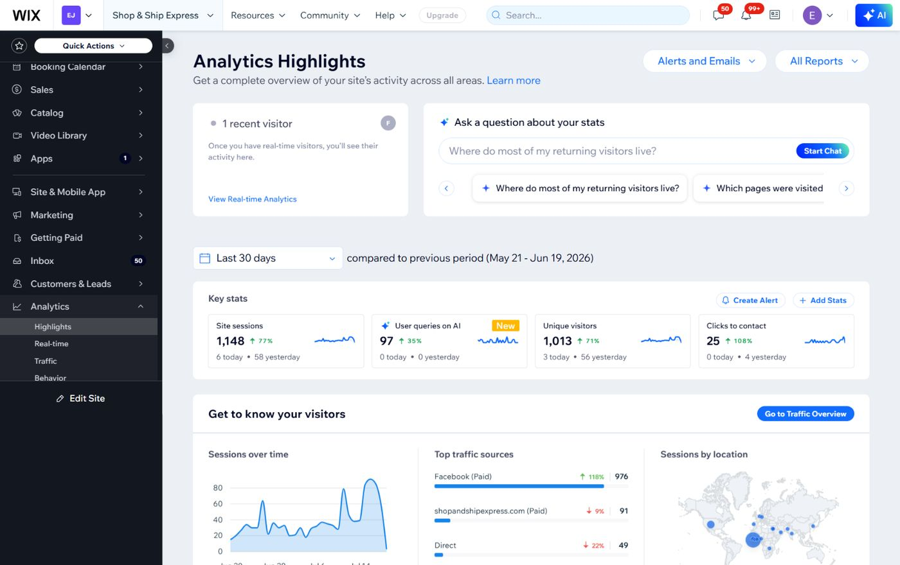

Related systems work · Analytics dashboard
Shop & Ship Express Analytics
A reporting and dashboard case study demonstrating information organization and operational visibility. It is not presented as proof of an automated workflow.
View related systems work